Live battlefield
ACT
Fisher's Bend
This is the live game today: a river valley, a contested ford, rival warbands, a shrine, floods, pileups, launches, recoveries, and goats doing things nobody planned.
GOAT Knight · Live on Roblox
GOAT Knight starts with an enormous war goat and a fight at Fisher's Bend. Charge downhill, get knocked sideways, somehow recover, and make it home with a story. Around that first battlefield, a wider steppe world is taking shape — your ger, the road, camps, other battles, and whatever trouble is waiting between them.
Live now at Fisher's Bend · the wider world is being built around it


What happens on the ride should stick with you
Ride out. Get into trouble. Make it back. Then ride out again.
Beyond the first battlefield
At Fisher's Bend, everyone can see what you did. At your ger, you live with what came out of it. On the Road, the ride between places becomes part of the story. As the world grows, those places should keep giving you new reasons to head back into a fight.
Live battlefield
ACT
This is the live game today: a river valley, a contested ford, rival warbands, a shrine, floods, pileups, launches, recoveries, and goats doing things nobody planned.
Home between battles
WHO AM I?
Home between fights. Your goats, your nökör companion, your gear, and the history you've started making all have a place to live here. It is where the next ride begins to feel personal.
Being built and tested
WHERE AM I GOING?
A place for the journey itself to matter. The Road is being developed as a real ride between home and battle, with room for encounters, choices, wildlife, and trouble along the way.
Where we're headed
WHAT HAPPENS NEXT?
We expect GOAT Knight to keep growing outward: other battlefields, new regions, caravans, rivals, hunts, origin stories, and places we have not named yet. The point is not a bigger map. It is more reasons to care about the ride back.
Battlefield→Ride outward→Something happens→Come back
If an adventure takes you away from the battlefield, it should give you a reason to care more when you return. Maybe you met someone, found a new route, lost a sure thing, changed your plans, or simply came home with a story you did not have before.
The core trio
GOAT Knight follows the same rider, war goat, and nökör companion through battle, travel, recovery, and home. The goal is to remember which goat you were riding when the bridge went wrong, who was beside you, and what happened on the way back.
Hills, fords, roads, banks, and landmarks should change how you move, what you notice, and what goes wrong.
Weight, momentum, bad footing, collisions, launches, and recovery make movement physical and funny without turning it into noise.
The best session ends with “remember when…” — not just a result screen or a bigger number.
Still Broken Games LLC
Still Broken Games is a small independent game studio in Georgia. GOAT Knight is our current game. We put ideas in front of real players early, keep the ones that create good stories, and cut the ones that only looked good on a feature list.
Right now we're expanding outward from Fisher's Bend carefully. The goal is not to make the world huge. It is to make every new place feel worth leaving for — and worth coming back from.